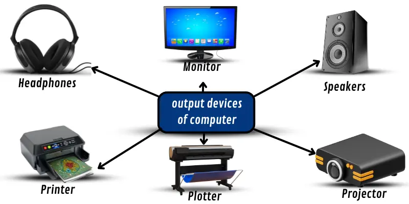

Invoer (Input)
Wat is invoer?
Alles wat je aan een computer geeft zodat de computer er iets mee kan doen is invoer.
De computer kan niet uit zichzelf iets doen, hij heeft informatie nodig.
Die informatie is invoer (input).

Voorbeelden:
-Als je je toetsenbord gebruikt maak je gebruik van invoer door te typen.
-Als je je scherm aanraakt maak je gebruik van invoer door touchscreen.
-Als je je muis gebruikt maak je gebruik van invoer door te klikken of te slepen.
Met al deze manieren van invoer geef je je computer informatie (invoer).
Uitvoer (Output)
Wat is uitvoer?
Uitvoer is de reactie op de invoer.
Dat houdt in dat als je invoer geeft aan je computer,
je computer daarop gaat reageren en iets op je scherm laat zien.

Voorbeelden:
-Als je gaat typen dan zie je dat verschijnen op je computer.
-Als je op je muis klikt veranderd er iets op je computer.
-Als je je scherm aanraakt met touchscreen veranderd er iets op je computer.
Hier gebeurt eerst invoer en dan een reactie (uitvoer).
Verwerking (Processing)
Wat is verwerking?
De verwerking is het bewerken of verwerken van informatie.
Verwerking is wat een computer doet om van ruwe informatie nuttige informatie te maken.
Deze verwerking kan je verdelen in een paar stappen:
1. Gegevens worden verzameld (Input).
2. Computer verwerkt de gegevens (Processing).
3. De verwerking wordt zichtbaar (Output)
Soorten verwerking:
-Rekenkundige verwerking
-Logische verwerking
-Data-transformatie
Informatie/gegevens
Wat wordt er bedoeld met informatie?
Informatie zijn in de informatica gegevens die belangrijk zijn voor mensen of systemen.
Informatie is niet hetzelfde als gegevens (data).
Bij gegevens wordt er gesproken over cijfers of ruwe feiten.
Informatie is verwerkte gegevens, zodat de gegevens betekenissen krijgen.
Voorbeelden:
Een voorbeeld van een gegeven is het cijfer 6.
De informatie is de gegevens, maar dan met een betekenis, bijvoorbeeld 6 appels of 6 oma's.